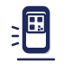

QR toko
qrcode.react
/bayar/bakso-bu-sri
qrcode.react
/bayar/bakso-bu-sri

12
Isi jumlah, tekan Bayar3
Tunjukkan bukti ke penjual Versi uji coba: memakai uang uji, bukan uang asli. Ini bukan QRIS; bayar dengan aplikasi dompet atau dompet demo.
Versi uji coba: memakai uang uji, bukan uang asli. Ini bukan QRIS; bayar dengan aplikasi dompet atau dompet demo.
Bayar di sini pakai Kulaya
Bakso Bu Sri
Versi uji coba: memakai uang uji, bukan uang asli. Ini bukan QRIS; bayar dengan aplikasi dompet atau dompet demo.
QR toko
qrcode.react
/bayar/bakso-bu-sri
qrcode.react
/bayar/bakso-bu-sri
1
Pindai kode QR2
Isi jumlah, tekan Bayar3
Tunjukkan bukti ke penjualVersi uji coba: memakai uang uji, bukan uang asli. Ini bukan QRIS; bayar dengan aplikasi dompet atau dompet demo.